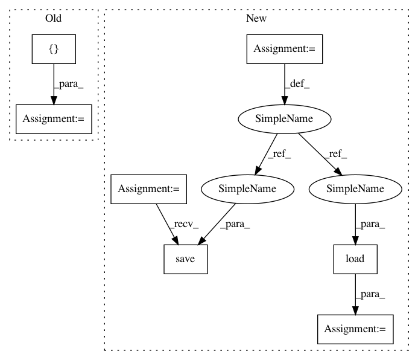

2df29df88d4b603b0e89e45481a062c38d4b829d,dipy/viz/tests/test_ui.py,,test_ui_textbox,#Any#,154
Before Change
// /TextBox
// Assign the counter callback to every possible event.
for event in ["CharEvent", "MouseMoveEvent",
"KeyPressEvent", "KeyReleaseEvent",
"LeftButtonPressEvent", "LeftButtonReleaseEvent",
"RightButtonPressEvent", "RightButtonReleaseEvent",
"MiddleButtonPressEvent", "MiddleButtonReleaseEvent"]:
textbox_test.add_callback(textbox_test.actor.get_actor(), event, counter)
current_size = (600, 600)
show_manager = window.ShowManager(size=current_size, title="DIPY TextBox Test")
show_manager.ren.add(textbox_test)
After Change
def test_ui_textbox(recording=False):
filename = "test_ui_textbox"
recording_filename = pjoin(DATA_DIR, filename + ".log.gz")
expected_events_counts_filename = pjoin(DATA_DIR, filename + ".pkl")
// TextBox
textbox_test = ui.TextBox2D(height=3, width=10, text="Text")
another_textbox_test = ui.TextBox2D(height=3, width=10, text="Enter Text")
another_textbox_test.set_message("Enter Text")
another_textbox_test.set_center((10, 100))
// /TextBox
// Assign the counter callback to every possible event.
event_counter = EventCounter()
event_counter.monitor(textbox_test)
current_size = (600, 600)
show_manager = window.ShowManager(size=current_size, title="DIPY TextBox")
show_manager.ren.add(textbox_test)
if recording:
show_manager.record_events_to_file(recording_filename)
print(list(event_counter.events_counts.items()))
event_counter.save(expected_events_counts_filename)
else:
show_manager.play_events_from_file(recording_filename)
expected = EventCounter.load(expected_events_counts_filename)
event_counter.check_counts(expected)
@npt.dec.skipif(not have_vtk or skip_it)
In pattern: SUPERPATTERN
Frequency: 3
Non-data size: 7
Instances
Project Name: nipy/dipy
Commit Name: 2df29df88d4b603b0e89e45481a062c38d4b829d
Time: 2017-03-28
Author: marc.cote.19@gmail.com
File Name: dipy/viz/tests/test_ui.py
Class Name:
Method Name: test_ui_textbox
Project Name: nipy/dipy
Commit Name: 2df29df88d4b603b0e89e45481a062c38d4b829d
Time: 2017-03-28
Author: marc.cote.19@gmail.com
File Name: dipy/viz/tests/test_ui.py
Class Name:
Method Name: test_ui_textbox
Project Name: RaRe-Technologies/gensim
Commit Name: 0bfb9daa540308cca9663bdf66a6266d599cf8ed
Time: 2018-01-15
Author: mrmohitrathoremr@gmail.com
File Name: gensim/test/test_tfidfmodel.py
Class Name: TestTfidfModel
Method Name: testPersistence
Project Name: RaRe-Technologies/gensim
Commit Name: 0bfb9daa540308cca9663bdf66a6266d599cf8ed
Time: 2018-01-15
Author: mrmohitrathoremr@gmail.com
File Name: gensim/test/test_tfidfmodel.py
Class Name: TestTfidfModel
Method Name: testPersistenceCompressed